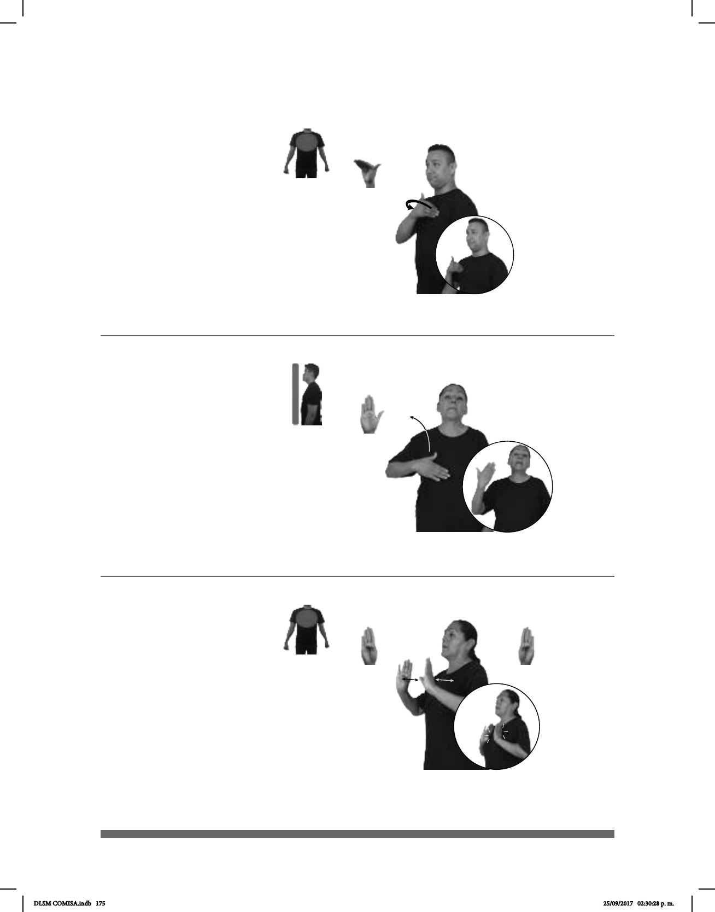

175
Seña: SM
B-P.7
Palma hacia adentro.
Sobre el pecho, del
lado izquierdo al derecho.
La mano simula un
salto.
sust. m. Cada uno de
los integrantes de una asociación,
corporación o sociedad.
(B-P 193)
ASOCIACIÓN ESA 300 AFILIA DOS MIEMBROS
Esa asociación tiene 300 miembros.
(B-P 194)
QUIZÁ VIRGEN pro-TÚ ORAR pro-ELLA MILAGRO
Si rezas a la virgen, te hará el milagro.
Seña: SM
B-P.2
Palma hacia adentro.
Del pecho a la cara.
Recto.
Cabeza
hacia atrás, ojos inusualmente
abiertos.
sust. m. Acontecimiento
extraordinario y maravilloso,
producto de la intervención de Dios
o de otra fuerza sobrenatural.
(B-P 195)
pos-MI HIJO pro-ÉL MILITAR
Mi hijo es militar.
Seña: SS
B-P.1
Palmas hacia el
centro.
A la altura del pecho.
Las manos golpean
el pecho repetidamente.
1. Adj. Que se
relaciona con la milicia o el
ejército. 2. sust. f. y m. Persona
que tiene a la milicia por profesión;
miembro del
ejército.
DLSM COMISA.indb 175 25/09/2017 02:30:28 p. m.